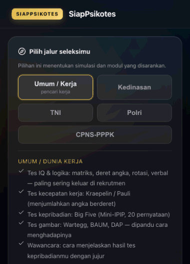
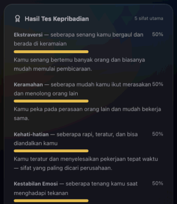
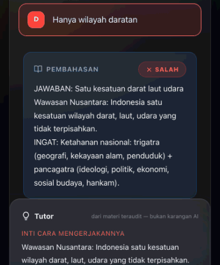

Latihan psikotes kerja & tes IQ, gratis dan tanpa akun
Kerjakan soal psikotes, latih kecepatan kerja, dan kenali kepribadianmu — lengkap dengan cara mengerjakan tiap soal. Semua bisa diulang sesering yang kamu mau, langsung di browser.
Mulai latihan sekarang — gratis, tanpa akun
Yang bisa kamu lakukan di sini
Semuanya gratis dan bisa diulang. Tidak ada bagian yang dikunci.
Tes IQ & logika
Matriks, deret angka, rotasi, verbal, dan rentang angka — jenis soal yang paling sering muncul.
Kecepatan kerja
Kraepelin/Pauli: menjumlahkan angka berderet dengan waktu. Bisa dimainkan berulang, ada analisis ritme.
Tes kepribadian
20 pernyataan untuk melihat lima sifat utama dirimu, dijelaskan dengan bahasa sehari-hari.
Bank soal & pembahasan
Cari soal berdasarkan topik, lihat cara mengerjakannya, dan ulangi soal yang pernah keliru.
Jalur sesuai kebutuhan
Pilih jalur Umum/Kerja, Kedinasan, TNI, Polri, atau CPNS-PPPK — latihan menyesuaikan.
Bisa offline
Setelah dibuka sekali, latihan tetap jalan walau tidak ada internet. Praktis di perjalanan.
Tes kepribadian lima sifat (Big Five)
Dua puluh pernyataan singkat, sekitar empat menit. Hasilnya lima sifat besar dengan penjelasan sederhana: apa artinya untuk cara kerjamu, dan bagaimana menyampaikannya saat wawancara.
- Memakai Mini-IPIP dari International Personality Item Pool — instrumen domain publik, boleh dipakai siapa pun.
- Tidak menghafal jawaban "yang bagus": yang dilihat adalah konsistensi jawabanmu.
- Bukan diagnosis psikologi dan bukan penentu kelulusan — hasilnya untuk mengenali dirimu.

Bukan cuma nilai — ada cara mengerjakannya
Setiap soal punya pembahasan tiga baris: jawabannya, langkah mengerjakannya, dan kiat mengingatnya. Kalau kamu masih belum paham, ada tombol untuk melatih topik yang sama dengan soal lain.
- Soal hitung diverifikasi mesin: jawabannya dihitung ulang, bukan sekadar disalin.
- Soal hafalan diperiksa dua gelombang oleh pemeriksa terpisah.
- Menemukan soal yang keliru? Laporkan dari dalam aplikasi — akan diperiksa.

Pertanyaan yang sering ditanya
Apakah benar-benar gratis?
Ya. Semua latihan, tes IQ, dan tes kepribadian gratis dan bisa diulang sesering yang kamu mau. Tidak ada langganan dan tidak ada kewajiban membeli.
Harus daftar atau bikin akun?
Tidak. Tidak ada pendaftaran, tidak ada surel, tidak ada kata sandi. Hasil latihanmu tersimpan di perangkatmu sendiri dan bisa kamu hapus kapan saja.
Bisa dipakai tanpa internet?
Bisa. Setelah halaman tersimpan di perangkat, latihan tetap berjalan walau internet mati.
Apakah ini tes IQ resmi?
Bukan. Ini alat latihan. Kami tidak memakai tes berlisensi seperti Raven, WAIS, CFIT, IST, atau Wartegg, dan hasil latihan tidak bisa dipakai sebagai hasil tes resmi maupun jaminan kelulusan seleksi.
Tes kepribadiannya pakai instrumen apa?
Dua puluh butir Mini-IPIP dari International Personality Item Pool (IPIP) yang berstatus domain publik, dengan aturan penilaian resminya. Hasilnya menggambarkan lima sifat besar, bukan diagnosis psikologi.
Mulai dari satu sesi, lima menit saja
Tidak perlu menyiapkan apa pun. Kalau kamu sedang menyiapkan psikotes kerja atau tes IQ, mulai hari ini lebih baik daripada mulai nanti.
Buka SiapPsikotes — gratisTanpa akun · bisa offline · ada pembahasan tiap soal